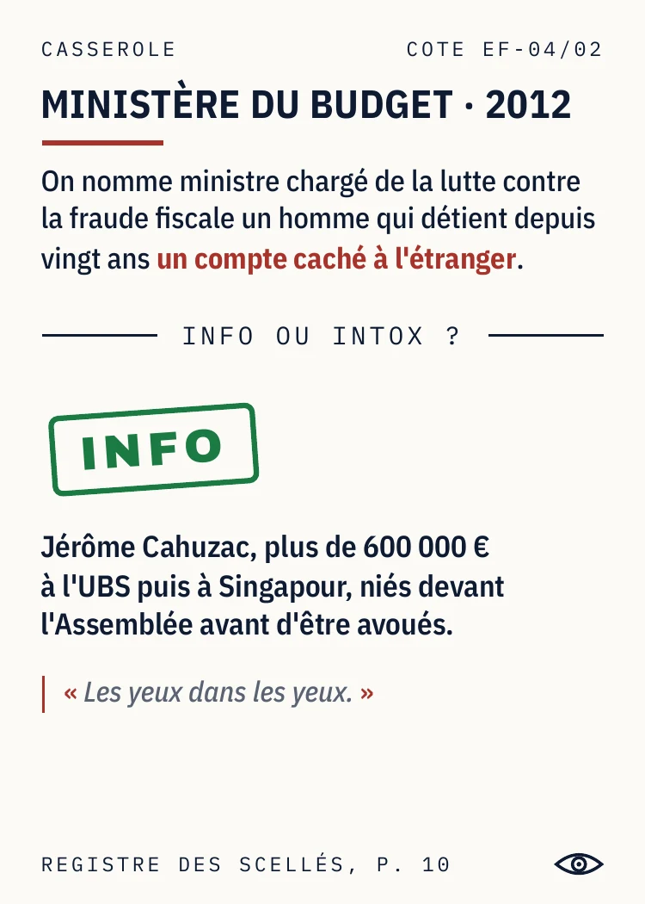
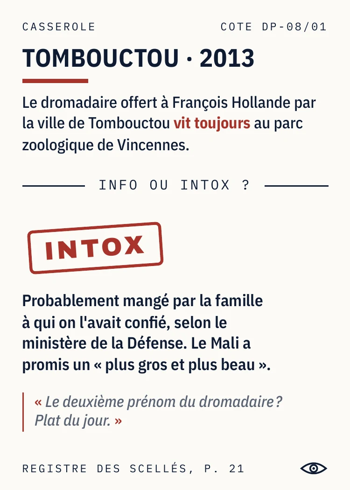
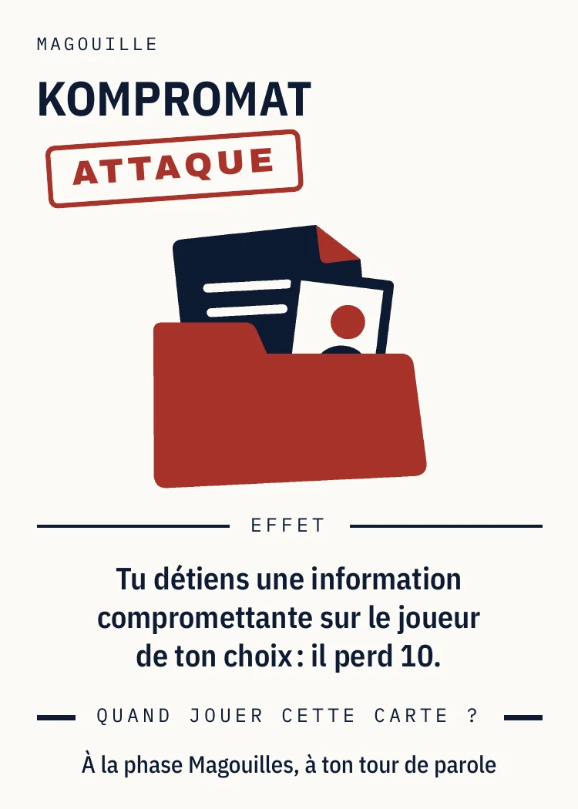
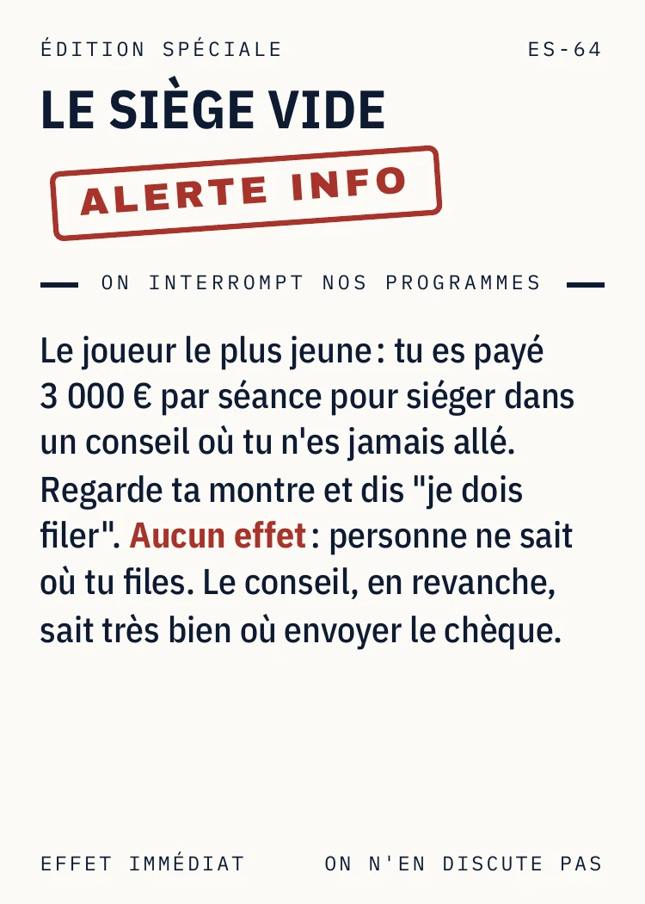

L'INA rencontre Blanc Manger Coco
À chaque tour, le Porte-parole lit une Casserole : une affaire politique française, authentique ou déformée. La table vote Info ou Intox, les yeux dans les yeux. Bonne réponse, dix points dans les sondages. Mauvaise, on pioche une Magouille : 49.3, Kompromat, Grâce présidentielle. Le premier à 50 % noue la cravate et passe son grand oral. Trois casseroles, deux bonnes réponses, élu.
Il existe des jeux qui inventent des scandales politiques. Celui-ci n'en a pas eu besoin.
- Genre
- Party game de bluff et de culture générale. Politique française documentée.
- Joueurs
- 3 à 8
- Durée
- 20 à 30 minutes. Appris en 2 minutes.
- Âge
- Dès 16 ans
- Matériel
- 100 Casseroles (200 visées en boîte) · 25 Éditions spéciales · 50 Magouilles en 12 types · 16 bulletins · plateau A3 · règle complète 4 pages · Registre des scellés 33 pages · une cravate
- État
- Prototype complet, imprimé et joué. Premier playtest septembre 2026, deuxième en cours.
- Titre
- Les yeux dans les yeux. Dépôt e-Soleau INPI du 3 septembre 2026.
- Auteur
- Quentin Grimal, premier jeu
Tout est vrai, et ça se prouve
Du jugé et du déclaré public, rien d'autre. Chaque carte a sa page au Registre des scellés, livré avec le jeu. Rien à plaider. Pièces en annexe.
Tous les bords, toute la Ve
La carte dit le fait, la table décide du reste. De 1958 à 2026, même barème pour tous les bords. Le seul endroit où ils sont traités pareil.
Un gisement renouvelable
2 700 faits identifiés, 200 cartes en boîte. Le reste attend son millésime. La matière première se renouvelle à chaque législature, sans effort de notre part.




La règle complète, le Registre des scellés et un jeu de cartes du prototype, en PDF ou en boîte. Un mail suffit. Réponse sous 48 h.
Nuits du Off, Festival International des Jeux de Cannes, du 23 au 27 février 2027. Les soirs des 23 et 24 sont réservés aux professionnels. Une partie dure trente minutes. Le débat qui suit, un peu plus.
Une vidéo de table et des photos du prototype arrivent avec la réimpression d'octobre 2026. En attendant, cinq Casseroles se trancheront sur le site.
Quentin Grimal, auteur
contact@lesyeuxdanslesyeux.info